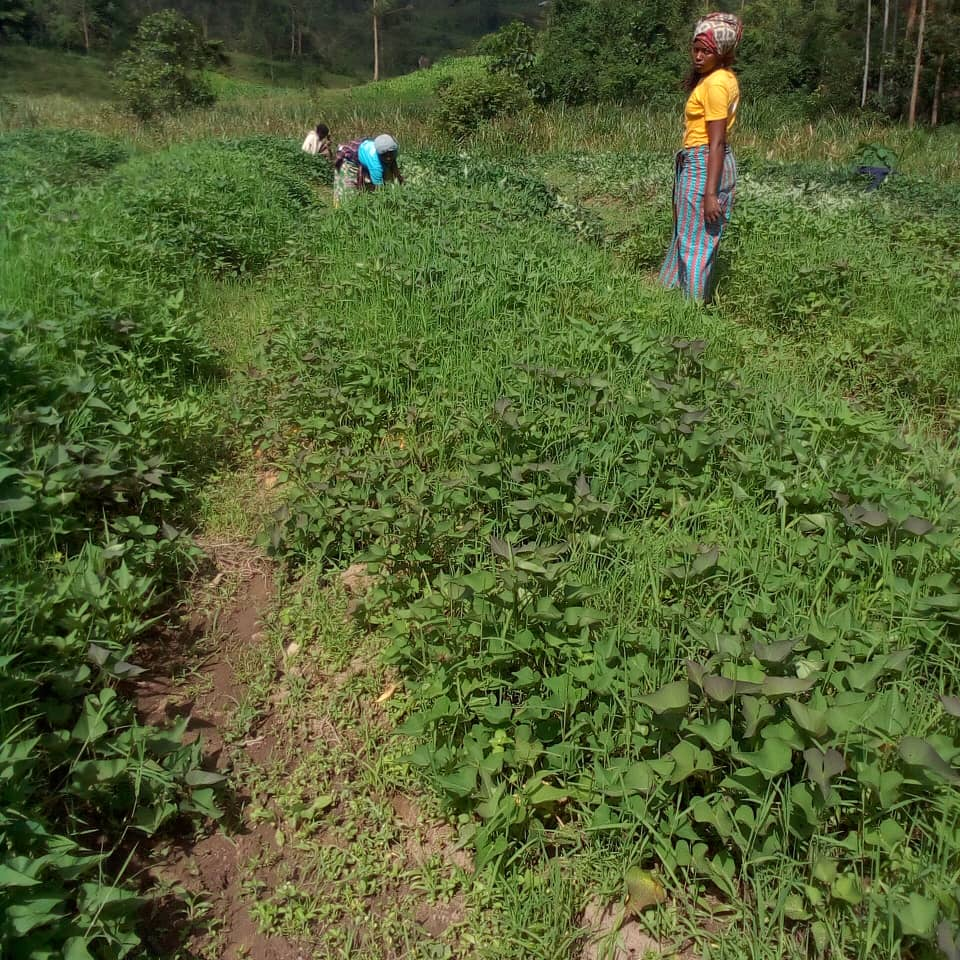

Nous sommes une entreprise de l'espoir dans toute l'Afrique à travers nos activités et dans notre domaine d'intervention, dont l'élevage des bétails, l'agriculture, l'éducation des nos enfants et l'encadrement de la jeunesse.
Qui sommes-nous ?

BUSANZA AGRIBUSINESS FARM LTD (BAFARM), une entreprise agro-pastorale créée le 07 avril 2022 dans le Busanza. Tout est parti de la situation désastreuse de la pauvreté qui frappe nos populations et surtout les plus déminus comme les orphelins, veuves, jeunes, désoeuvrés, filles mères, victimes des violences,...
Dans la société, qui nous a vu naitre, grandir, les gens souffrent, les gens manquent quoi faire, les tueries du jour le jour, les violences, des enfants qui manquent la scolarisation, l'éducation, l'encadrement, les gens qui meurent de faim et pourtant nos terres peuvent et fournissent de la nourriture. Pourquoi n'est pas assisté ces gens qui ont plus besoin de nous?
L'agriculture est une industrie importante dans de nombreux pays, fournissant des emplois à des millions de personnes et contribuant à l'économie locale et nationale. Elle est essentielle pour répondre aux besoins alimentaires de la population mondiale croissante et pour assurer la sécurité alimentaire.
Notre société a besoin de l'aide sociale, il s'agit de la fourniture de services sociaux et de soutien à des personnes ou à des groupes qui en ont besoin. Cela peut inclure des services de santé mentale, des services de garde d'enfants, des programmes de formation professionnelle et d'autres types de soutien.
Notre mission
Créer et proposer des produits et des services qui répondent à des attentes de la communauté et qui stimulent la croissance économique de notre environnements. Nous visons à atteindre cet objectif en utilisant des pratiques durables et responsables, en encourageant la collaboration avec notre population cible et en maintenant une approche centrée sur le client à chaque étape du processus.
Notre vision
Notre vision est d'etre un modèle dans l'utilisation des ressources disponibles pour réduire et éradiquer la faim et la pauvreté à travers notre apport dans certains secteurs comme l'agriculture, l'élevage, l'encadrement de notre jeunesse, l'éducation de nos enfants, apprentissage des arts, couture, et divers métiers pour aider à l'avancement de notre société.
Nos Objectifs
Notre entre entreprise a comme objectif de combattre l'insécurité alimentaire, d'essayer de réduire le taux de chomage, éradique la pauvreté dans notre société, la dégradation de l'environament, former nos enfants en guise d'un avenir meilleur, promouvoir l'apprentissage des nos jeunes

Nos services

Nous faisons l'élevage des poulets de chair, poulets hybride, des bondeuses, élevage des porcs, lapins, cobailles, canards,...

Nous faisons l'agriculture des mais, des courges, canne à sucre, des oigons, des légumes, des sorgho, les bananes, le riz,...

Nous faisons assistance aux plus démunis, filles mères, les déplacés des guerres, femmes violées, assistance dans des orphelinats,...

Nous donnons de l'éducation aux enfants pour le préparer à un avenir prometteur, les éduquer, les aider à se développer,...

Nous encadons des jeunes et nous les apprennons à devenir autonomes comme l'apprentissage d'élevage, art culinaire, coupe et couture, maçonnerie